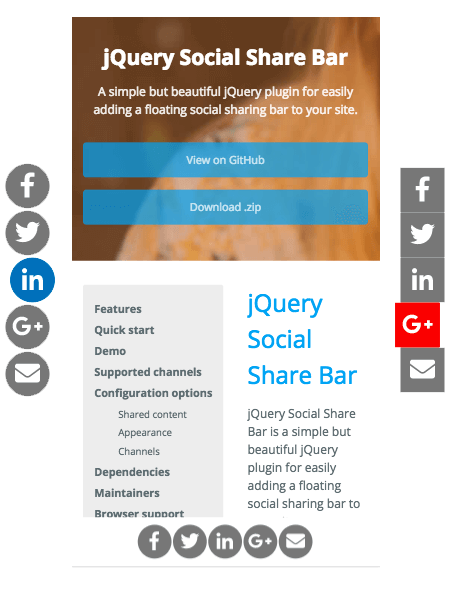

jQuery Social Share Bar
jQuery Social Share Bar is a simple but beautiful jQuery plugin for easily adding a floating social sharing bar to your site.
It's small and easy-to-use and doesn't track the shares or make other API calls, which can cause privacy issues and slow things down.

Features
- Minimalistically beautiful design
- Floats on the same position when page is scrolled
- Responsive behavior: bar automatically moves to bottom of screen on mobile
- Two themes: circular and square icons
- Supports 10 different channels
- Small file sizes, no bloat
- Super simple to add to any web page
- Simple animations to keep things interesting
- No tracking or external API calls
- Uses Font Awesome SVG for cross-browser support
Quick start
1) Add the following files to the head section of your page
<link type="text/css" href="https://use.fontawesome.com/releases/v5.0.6/css/all.css" rel="stylesheet">
<script type="text/javascript" src="https://cdnjs.cloudflare.com/ajax/libs/jquery/1.9.0/jquery.min.js"></script>
<link rel="stylesheet" type="text/css" href="css/jquery-social-share-bar.css">
<script type="text/javascript" src="js/jquery-social-share-bar.js"></script>
2) Add a container for the bar to be inserted into on the page
<div id="share-bar"></div>3) Initialize the library (preferably at the end of your body)
$('#share-bar').share();Demo
A demo can be seen hovering around on the left side of this page.
Supported channels
Ten different social media channels are supported for sharing your content to.
- Google+
- Tumblr
- StumbleUpon
- Digg
Configuration options
| Shared content | |
|---|---|
pageTitle |
The title of the page to be shared. By default, the html document.title
$('#share-bar').share({
pageTitle: 'Viima homepage'
});
|
pageUrl |
The window.location.href
$('#share-bar').share({
pageUrl: 'https://www.viima.com'
});
|
pageDesc |
A description of the site to share, as used by some networks. By default, the meta description of the page is used. $('head > meta[name="description"]').attr("content")
$('#share-bar').share({
pageDesc: 'Viima is the best way to collect and develop ideas'
});
|
| Appearance | |
position |
Determines the position of the widget. Value has to be either left
$('#share-bar').share({
position: 'right'
});
|
theme |
Determines the theme used by the widget. Value has to be either circle
$('#share-bar').share({
theme: 'square'
});
|
animate |
A true
$('#share-bar').share({
animate: false
});
|
| Channels | |
channels |
Determines the channels used in the widget. Value has to be an ['facebook', 'twitter', 'linkedin', 'googleplus', 'email']
$('#share-bar').share({
'channels': ['reddit', 'stumbleupon', 'pinterest', 'digg', 'tumblr']
});
|
Dependencies
- jQuery >= 1.9.0
- Font Awesome 5
Maintainers
- Jesse Nieminen, Viima Solutions Oy
Browser support
IE10+ and all modern browsers
Copyright and license
Code and documentation copyright 2018 Viima Solutions Oy. Code released under the MIT license.